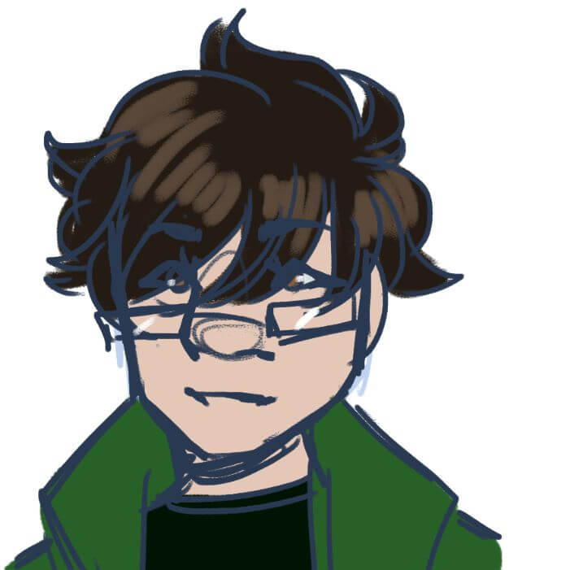
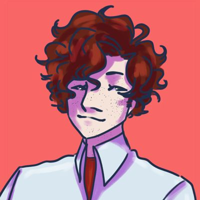

⚙ 1870s (Eddie) ⚙
⚙ 2010s (QuicksilverAce) ⚙
Howard Flugelmeyer is Max's great-grandson and a famed clockmaker. Once an idealistic inventor, nowadays he continues his business of hypnotizing the city’s orphans to work in subhuman conditions making clocks. He's cartoonishly evil, and his superpower is his hypnotic gaze which forces anyone who makes eye contact to obey his commands.
Ardalan Aragona is Howard's assistant, and he hates his job. Somehow, he's completely immune to Howard’s hypnosis, which is probably the only reason he's still alive. Alan keeps the business running smoothly almost singlehandedly, but is debating sabotaging his boss’ business from the inside. His only friend and drinking buddy is a man he knows as "Eddie" (David).
David Andrews (aka Edu) is one of the city's prominent superheroes. His superpower is audiokinesis. His main concern is Howard Flugelmeyer, and has no idea how Alan hasn't figured out who he is yet. After helping bust a shady research lab that Howard owns he becomes roommates with the unfortunate Dr. Gard.
Jonathan "Jay" Slick (aka Juno) is the other half of the dysfunctional duo of heroes. His superpower is chronokinesis. He's a cynical, depressive stoner type and drives David up the wall with his antihero attitude and habit of breaking into David's apartment at weird hours. Jay is Joey's cousin.
 Dr. Stephen "Stevie" Gard was a brilliant biologist who was forced by the Flugelmeyer company to do experiments involving phoenix DNA, using himself as the test subject. He now is a sort of mutant were-chicken who can turn into a giant humanoid rooster. He eventually learns to control his transformations and the phoenix-form's pyrokinesis, but he has to go "full chicken" to use it.
Dr. Stephen "Stevie" Gard was a brilliant biologist who was forced by the Flugelmeyer company to do experiments involving phoenix DNA, using himself as the test subject. He now is a sort of mutant were-chicken who can turn into a giant humanoid rooster. He eventually learns to control his transformations and the phoenix-form's pyrokinesis, but he has to go "full chicken" to use it.
Zarin Lowell, usually only known as Grip, is an investigative reporter. His superpower is the ability to stop time for 15 seconds at a time. Rumor has it he and Juno exchanged real names and then promtly forgot. He gets captured by Flugelmeyer for a while when trying to bust him for using child labor.
Joey Lartigue is Flugelmeyer's head of security and the guard assigned to making sure Grip doesn't escape. His superpower is telepathy, but usually doesn't tell anyone. He's paid well but has the attitude of every exhausted minimum wage worker. Like most significant workers at Flugelmeyer co, he only hasn't quit because he fears (with good reason) that Howard will kill him if he tries.


")
 and Juno (Jay) rescuing Steven Gard")